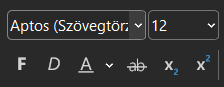
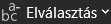

7. évfolyam szövegszerkesztési feladat (1.)
Ebben a dokumentumban egy kis szövegszerkesztési ismétlésen vezetlek végig titeket. Egy picit lejjebb találjátok azt a szöveget, amellyel dolgozni fogtok. Ez alatt vannak a feladatok, amelyeket sorban kell elvégeznetek. Minden feladatnál van egy rövid leírás: ha tudod, akkor haladj az alapján, mert úgy gyorsabb. Ha valamit nem értesz vagy nem tudod, hogyan kell megcsinálni, akkor olvasd el a részletesebb leírást, ahol képeket is találsz.
Jó munkát!
Nyers szöveg, amivel dolgozni fogsz
A számítógép története
A számitógép ma már minden napjaink része de ez nem volt mindig igy. Az első számologépek nagyon nagyok voltak és csak egyszerü müveleteket tudtak elvégezni sok esetben egész szobákat foglaltak el és rengeteg áramot fogyasztott.
Az internet megjelenése teljesen megváltoztatta a világot ma már pillanatok alatt információhoz juthatunk és kapcsolatba léphetünk más emberekkel akár a föld másik oldalán is. azonban fontos hogy okosan használjuk mert nem minden információ megbizható.
A diákok számára a számitógép segitséget nyujthat a tanulásban például prezentációk készitésében vagy házi feladatok megirásában. ugyanakkor figyelni kell arra is hogy ne töltsünk túl sok idöt játékokkal.
Összességében elmondhato hogy a technologia fejlödése sok elönyt hozott de felelösséggel kell használni.
1. Dokumentum létrehozása, szöveg bemásolása
Önálló feladat (haladóknak)
Másold le a fenti szöveget, majd nyisd meg a Wordöt, és illeszd be egy új üres dokumentumba! Mentsd el, lehetőleg a saját meghajtódon az aktuális évfolyamod mappájába! A fájlnév legyen A számítógép története saját neved.docx
Részletes leírás (lépésenként)
- A szöveg másolása: az egér segítségével jelöld ki a fenti szöveget a böngészőben! Jobb egérgombbal kattintva kiválaszthatod a Másolás lehetőséget, de az is jó, ha megnyomod a ctrl + c billentyűkömbinációt.

- Dokumentum készítése és a szöveg beillesztése: keresd ki a Wordöt, és nyisd meg, majd kattints az Üres dokumentum lehetőségre! itt nyomd meg a ctrl + v billentyűkombinációt!
- A dokumentum mentése: kattints a mentés gombra, vagy nyomd meg a ctrl + s gombot! A bal oldalon válaszd ki a Tallózás gombot, majd a felugró párbeszédablakban keresd meg a saját meghajtódat az Ez a gép alatt! Írd be a fájlnevet: A számítógép története saját neved, majd kattints a Mentés gombra, vagy nyomd meg az Enter-t
2. Hibák javítása és a szöveg bekezdésekre tagolása
Önálló feladat (haladóknak)
Keresd meg és javítsd ki a beillesztett szövegben a (szándékosan) benne hagyott helyesírási hibákat! Lehet, hogy a nyelvtani (vessző-) hibákat nem biztos, hogy jelzi (illetve hibásan is jelezhet); ehhez menj a Nyelvhelyesség részhez! Tagold a szöveget bekezdésekre és címre! A bekezdések első mondatai a következők: "A számítógép ma már...", "Az internet megjelenése...", "A diákok számára..." és "Összességében..."
Részletes leírás (lépésenként)
- Helyesírási hibák javítása: a Word a helyesírási hibákat piros hullámos, a nyelvtaniakat (pl. vesszők, különírás szabályai) kék dupla vonallal aláhúzva jelzi. Ezekre kattintva javaslatokat is tesz. Néha hibásak, de érdemes legalább megfontolni.
- Nyelvtani hibák javítása: a nyelvhelyességi hibákat nem mindig (pl. amikor ezt írom, akkor sem) veszi észre ennyi helyesírási hiba mellett a program. Segít, ha a lap alatt, bal oldalon a nyelvhelyesség () gombra kattintasz. Ekkor megjelenik a jobb oldalon egy szerkesztősáv, amely hatására átszámol minden hibát a program.
- Szöveg tagolása: Szúrj be új sort az Enter billentyű megnyomásával a cím ("A számítógép története") után! A többi bekezdést úgy alakítsd ki, hogy a bekezdések első mondatai a következők legyenek: "A számítógép ma már...", "Az internet megjelenése...", "A diákok számára..." és "Összességében..."
3. A cím és néhány szó kiemelése
Önálló feladat (haladóknak)
A címet emeld ki: igazítsd középre, változtasd meg a betűtípust és -méretet, tedd félkövérré és dőltté, válassz neki valami elegáns, sötét színt! Emeld ki félkövérrel a következő szavakat: számítógép, internet, információ, diákok, tanulás, technológia.
Részletes leírás (lépésenként)
- A cím kiemelése: jelöld ki a címet! A Kezdőlap fülön keresd meg a Betűtípus részt (

)! Itt állíthatod be a betűtípust, a betűméretet, a Félkövér és a Dőlt beállításokat. Állítsd át a betűtípust egy szimpatikusra, növeld a betűméretet, tedd félkövérré és dőltté! A Betűszín ( ) is itt van, ettől balra. Erre kattintva válassz egy szép, sötét színt! Keresd meg ettől balra a Bekezdés részt: itt találod az Igazítás részt. Válaszd ki a Középre igazítás (
) is itt van, ettől balra. Erre kattintva válassz egy szép, sötét színt! Keresd meg ettől balra a Bekezdés részt: itt találod az Igazítás részt. Válaszd ki a Középre igazítás ( ) lehetőséget!
) lehetőséget!
- Szavak kiemelése: jelöld ki a következő szavakat, és állítsd őket Félkövérre! számítógép, internet, információ, diákok, tanulás, technológia
4. Felsorolás készítése
Önálló feladat (haladóknak)
Az A diákok számára... kezdetű bekezdésben a ...segítséget nyújthat például után tegyél egy kettőspontot, majd a következő két példát alakítsd felsorolássá! Ehhez írj még 2-3 egyebet, amelyben szerinted fontos kiemelni, hogy a számítógép segítséget nyújt neked!
Részletes leírás (lépésenként)
- Minden elem külön bekezdésbe helyezése: Az "A diákok számára" kezdetű bekezdésben a "segítséget nyújthat például" után tegyél kettőspontot, majd az enter gombbal tedd új sorba a "prezentációk készítésében", majd ugyanúgy enter-rel a "házi feladatok készítésében" részt is! A házi feladatos példa után is nyomj enter-t, hogy az utána következő részek ne kerüljenek felsorolásba!
- Felsorolás kialakítása: jelöld ki a két példát, és a Kezdőlap fülön válaszd ki (a Bekezdés részben) a Felsorolás parancsot ()!
- Saját példák írása: a második pont után nyomj enter-t, és írj még 3-4 saját példát, amiben szerinted a számítógép megkönnyíti a diákok életét.
5. Sorköz és térköz beállítása, automatikus elválasztás
Önálló feladat (haladóknak)
A törzsszövegben mindenhol állítsd 1,5-szeresre a sorközt! A térköz legyen a bekezdések előtt és után 6-6 pontos (6pt)! A törzsszöveg legyen sorkizárt, és kapcsold be az automatikus elválasztást!
Részletes leírás (lépésenként)
- A sorköz beállítása: jelölj ki mindent a címen kívül! Kattints a Kezdőlapon a Bekezdés részben a Sorköz (
 ) pontra! Válaszd ki az 1,5-ös lehetőséget!
) pontra! Válaszd ki az 1,5-ös lehetőséget!
- A térköz beállítása: miközben továbbra is ki van jelölve minden, ami eddig, a Kezdőlap fül Bekezdés részének jobb alsó sarkában kattints a párbeszédablak megnyitására ()! A felugró ablakban állítsd a Térköznél az előtte és utána lehetőséget is 6-ra! Itt, a leírás jobb oldalán is látod, hogy a sorközt is lehet itt is állítani. Most már ezt is tudod, de arra van egyszerűbb megoldás is. Egyébként a térköz is állítható máshol: az Elrendezés fülön párbeszédablakon kívül is beállíthatod, de ott csak ikonok jelzik, hogy melyik az elé és melyik az utána kerülő térköz.
- Sorkizárt igazítás beállítása: Bár ezt is beállíthatod a Bekezdés párbeszédablakban, a Kezdőlap fülön is van rá parancs: . Kattints rá, miközben még mindig minden ki van jelölve a cím kivételével!
- Automatikus elválasztás bekapcsolása: kattints az Elrendezés fülre, majd keresd meg az Elválasztás gombot (

)! Kattints rá, és válaszd az Automatikus lehetőséget!
6. Kép hozzáadása és igazítása
Önálló feladat (haladóknak)
Keress egy képet, és szúrd be! A szöveget négyzetesen vagy szorosan futtasd körbe, a kép méretét pedig úgy állítsd be, hogy a teljes tartalom pont kiférjen egy oldalra! A kép a lap közepén, a jobb margónál legyen!
Részletes leírás (lépésenként)
- Kép keresése és beszúrása: kattints a szövegben oda, ahová a képet szeretnéd. Menj a Beszúrás fülre, válaszd a Képek, majd az Online képek... lehetőséget. Keress és illessz be egy, a mesterséges intelligenciához szerinted illő képet!
- Kép elhelyezése a lap közepén, jobb oldalon: a képet kijelölve kattints a Képformátum menüre (bár először az lesz aktív, amikor beszúrtad a képet). Itt az Elrendezés részben keresd az Elhelyezés parancsot! Kattints rá, majd válaszd ki a margó jobb oldalára, középre kerülő változatot!
- Kép méretének beállítása, jobb oldalon hagyás: fontos, hogy a képeket mindig az egyik sarokban levő fogantyúval méretezd át, mert így nem torzulnak el. Ha a jobb margóhoz rögzítjük a képet, akkor az egyik bal sarkában levő fogantyút fogd meg, és kicsinyítsd addig, amíg egy oldalra nem kerül az összes szöveg! Ekkor még egyszer megismételheted az előző lépést, hogy középen legyen a kép a jobb oldalon, de az sem baj, ha kicsit feljebb vagy lejjebb van.
7. A munka beadása
Mentsd el a munkádat, majd küldd be a Dolgozatokba!
A részleteket a lent villogó sávra kattintva láthatod, ha még nem tudod, mit kell ilyenkor csinálni.


×


 )! Itt a Kezdőképernyő alatt (ez jelenik meg automatikusan) látnod kell az éppen most elmentett fájlodat. Kattints erre egyszer, hogy kijelöld (nem akarjuk megnyitni, ezért ne duplán; ha mégis duplán kattintottál, akkor térj vissza a pont elejére!), majd nyomd meg a
)! Itt a Kezdőképernyő alatt (ez jelenik meg automatikusan) látnod kell az éppen most elmentett fájlodat. Kattints erre egyszer, hogy kijelöld (nem akarjuk megnyitni, ezért ne duplán; ha mégis duplán kattintottál, akkor térj vissza a pont elejére!), majd nyomd meg a